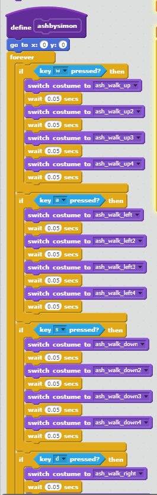

Dungeon Dodge is a game where you, the player, are contained within a dungeon, and fireballs are constantly being "hurled" at you. You must dodge the fireballs for as long as possible, If the amount of lives you have is reduced to zero, you lose. While developing this game, my partner added a scoring system that gives you a point for every second that you manage to stay alive. We used a random number generator to randomize the spawn areas of the fireballs. The game's difficulty changes depending on the mode that you select: easy, medium, and hard (easiest to hardest). The game ends when you run out of lives, you lose one life everytime you hit a fireball.
The inspiration behind this game was "The Binding of Isaac" franchise. The idea of the game was really simple but could also be fun so we decided to create something somewhat similar. Two successsful points in the development process are the user interface, which was very user friendly and has a clean design, and the coding for the movement of sprites, which was the simplest part of the project. While creating the game we had problems with the timer and code of the tutorial. We solved these problems by just slowly trying different things until it worked the way that we wanted to. If we had more time and resources for this project, I would want to improve the lives system, as there were a few bugs with that, and I would want to make the game more graphically pleasing, as it is kind of plain.
This algorithm is very significant to the game. It is an algorithm since it is a set of "rules" that the computer will follow and then output anything necessary. This algorithm makes it so that if certain keys are pressed, the sprite will move in a certain direction.
This "more blocks" was used to make it so that the sprite will change costumes depending on the direction it is moving on and the key that is pressed. This "more blocks" is activated whenever it receives a certain broadcast.